▲ 노란 의상을 입은 참가자들이 도로를 행진하는 모습(과거 칠십리축제 퍼레이드 사진, 촬영 연도 확인 못 함) 사진=한국관광공사
"행사장이 천지연폭포 주차장이라는데, 차는 어디에 세우지?" 제32회 서귀포칠십리축제는 2026년 10월 23일(금)부터 25일(일)까지 3일간 서귀포 천지연폭포 주차장 일원에서 열린다. 차를 가져가는 사람에게 가장 큰 변수는 프로그램이 아니라 행사장 자체가 주차장이라는 점이다. 이 글은 공식 포스터·70festival.com 공지와 서귀포시 주차포털·언론 보도로 확인한 일정·프로그램, 그리고 2025년 제31회 때 안내된 교통·주차 사례를 바탕으로 자가용·렌터카 동선을 정리했다.
기준일은 2026년 10월 1일이다. 9월 17일 새로 단장한 공식 사이트(70festival.com)에는 거리 퍼레이드의 일시·행진 코스와 어린이 선발대회·우리동네 예술인 일정이 공지로 올라와 있다. 반면 '행사 안내'·'프로그램 안내' 메뉴는 아직 '오픈 예정' 상태이고 축제 지도·오시는 길은 추후 업데이트 예정이라고 공지돼, 전체 시간표·출연진·교통통제·셔틀은 비어 있다. 확인하지 못한 항목은 본문에 "미발표"·"확인 못 함"으로, 추정은 "추정"으로 표시했다.
1. 포스터로 확인한 기본 정보 — 날짜가 다른 사이트도 있다
제32회 서귀포칠십리축제의 공식 포스터에는 "2026.10.23(금) ~ 25(일), 천지연폭포 주차장 일대"와 슬로건 "동GO동樂 볼거인, 놀거인, 재미인"이 적혀 있다. 주최는 서귀포시, 주관은 서귀포칠십리축제추진위원회다. 서귀포시 착수보고회가 9월 9일 열렸고, 17개 읍면동과 분야별 용역업체가 협력해 준비 중이라고 지역 언론이 보도했다.
▲ 제32회 서귀포칠십리축제 공식 포스터(한국관광공사 TourAPI 등록 이미지, 원본 비율 그대로 사용) 사진=한국관광공사
| 항목 | 내용 |
|---|---|
| 기간 | 2026년 10월 23일(금)~25일(일), 3일간 |
| 장소 | 천지연폭포 주차장 일원 (서귀포시 남성중로 2-3로 안내하는 곳도 있고, 한국관광공사는 서홍동 684 천지연폭포 인근 주차장으로 표기, 2025년 제31회는 남성중로 2-9로 표기한 곳도 있어 주소 표기가 출처마다 다르다) |
| 입장료 | 무료 |
| 주최·주관 | 서귀포시 / 서귀포칠십리축제추진위원회 |
| 문의 | 064-760-3942 |
| 공식 사이트 | 70festival.com (9월 17일 리뉴얼). 공지사항에 거리 퍼레이드·어린이 선발대회·우리동네 예술인 안내 게시. '행사 안내'·'프로그램 안내' 메뉴는 '오픈 예정', 축제 지도·오시는 길은 추후 업데이트 예정 |
| 운영시간 | 2026년 미발표 (2025년 제31회는 Visit Jeju에 10:00~23:00로 게재됐으나 2026년 공식 안내는 확인 못 함) |
📍 날짜가 다르게 적힌 사이트를 주의
일부 축제 정보 사이트(더페스티벌)에는 이번 축제가 10월 16일~18일로 적혀 있다. 그러나 공식 포스터, 서귀포시 관련 보도(뉴스다·fnewstv·뉴스제주), 한국관광공사 정보는 모두 10월 23~25일이다. 출발 전 공식 채널로 한 번 더 확인하자.
공식 사이트에서 최신 공지를 확인할 수 있다. 서귀포칠십리축제 공식 사이트 바로가기
2. 무엇을 하나 — 확인된 프로그램과 "추진 예정" 구분
공식 사이트 공지로 일정이 확인된 것은 거리 퍼레이드(23일), 해순이·섬돌이 어린이 선발대회 본선(25일), 우리동네 예술인(24~25일) 세 가지다. 한국관광공사 축제 정보에는 길거리 퍼레이드와 개막식(드론라이트쇼 포함)이 메인 행사로, 청소년 페스타·가요제·러닝 인 칠십리·칠십리 펌프대회·칠십리 호러메이즈·플리마켓·푸드트럭이 함께 소개된다. 플레이제주 등록 안내 기준으로는 경연 프로그램으로 청소년 페스타·칠십리 가요제, 타 부서 연계(추진 예정)로 드론쇼·지붕없는 도서관·방방곡곡 콘서트, 지역 상권 연계(추진 예정)로 칠십리 영수증 패스·칠십리 파트너스가 올라 있다. "추진 예정" 항목은 변경될 수 있다.
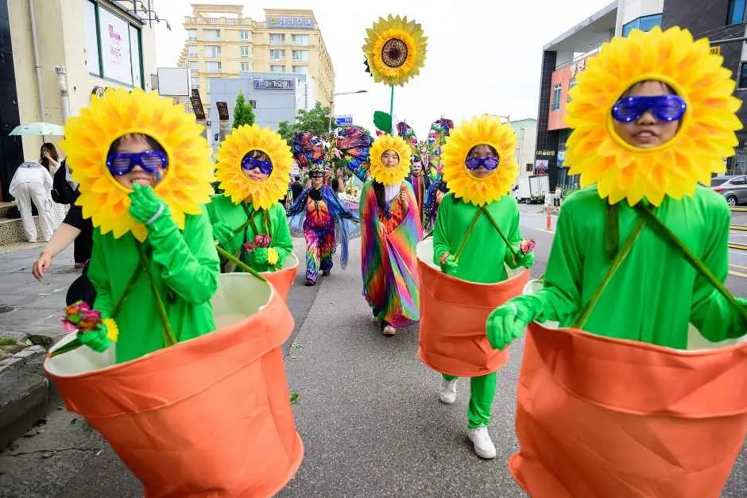
▲ 해바라기 의상을 입은 참가자들이 도로를 따라 행진하는 모습(과거 칠십리축제 퍼레이드 사진, 촬영 연도 확인 못 함) 사진=한국관광공사
| 구분 | 내용 | 상태 |
|---|---|---|
| 거리 퍼레이드 | 23일(금) 16:00~19:00, 중정로-정방로-칠십리로-천지연폭포 주차장 행진(약 2.8km·약 40분), 주제 '네 개의 빛으로 모다들엉'. 일반참가자 모집 9월 15일~10월 2일 18:00, 선정 발표 10월 7일 | 확인됨(공식 사이트 공지). 차량 통제 구간·시간은 미발표 |
| 해순이·섬돌이 어린이 선발대회 | 본선 25일(일) 16:00~17:00, 천지연폭포 특설무대. 제주 거주 만 6~12세, 접수 9월 22일~10월 11일, 예선 결과 10월 14일 | 확인됨(공식 사이트 공지) |
| 우리동네 예술인 | 공연 24일(토)·25일(일), 축제장 메인무대, 팀당 10분 이내, 내부 심사로 최대 16팀 선정(모집 9월 16~23일) | 확인됨(공식 사이트 공지). 선정 팀·시간대는 미발표 |
| 개막식 | 드론라이트쇼 포함으로 소개(한국관광공사 정보) | 일정 확인 못 함(공식 사이트 '프로그램 안내'는 오픈 예정) |
| 경연 | 청소년 페스타, 칠십리 가요제 | 확인됨(날짜·시간 미발표) |
| 연계 프로그램 | 드론쇼, 지붕없는 도서관, 방방곡곡 콘서트 | 추진 예정 |
| 상권 연계 | 칠십리 영수증 패스, 칠십리 파트너스 | 추진 예정 |
| 기타 | 러닝 인 칠십리, 칠십리 펌프대회, 칠십리 호러메이즈, 플리마켓, 푸드트럭 | 한국관광공사 소개, 세부 미확인 |
| 출연진 | 2025년엔 자우림·엔플라잉 등이 출연 | 2026년은 미발표(공식 사이트에 게시된 라인업 없음) |
참고로 2025년 제31회(10월 17~19일)는 첫날 개막 공연, 둘째 날 읍면동 주민 800여 명이 참여한 거리퍼레이드와 청소년 페스타, 마지막 날 칠십리 오픈런·가요제로 이어졌다. 올해도 같은 틀일 가능성이 있지만 2026년 일자별 전체 편성은 발표 전이다. 한 가지 달라진 점은 공간이다. 2025년은 Visit Jeju에 '천지연폭포 일원'으로 소개되면서도 서귀진지·자구리공원·새연교·이중섭거리까지 원도심 곳곳에서 공연이 열렸지만, 2026년은 공식 포스터와 사이트 모두 '천지연폭포 주차장 일대'만 적고 있어 범위가 같을지는 확인 못 했다.
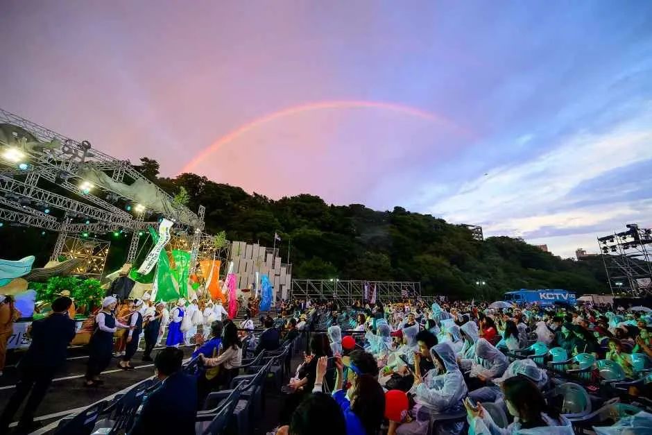
▲ 우의를 입은 관객과 하늘의 무지개가 보이는 과거 칠십리축제 현장(촬영 연도 확인 못 함) 사진=한국관광공사
3. 23일 퍼레이드와 교통통제 — 2025년엔 어땠나
첫날 퍼레이드는 시민이 직접 참여하는 형태다. 뉴스제주 기고(9월 22일, 송산동 행정복지센터 김아진)는 각 지역이 "하나의 목표 아래 모여 지역만의 색을 만든다"고 소개했고, 송산동은 9월 17일 주민센터에서 퍼레이드 전문가 컨설팅을 열어 구간 내 안전 확보 대책을 논의했다. 여기에 공식 사이트 공지(9월 17일 게시)가 구체적인 코스를 밝혔다. 행사일시는 2026년 10월 23일(금) 16:00~19:00, 행진 코스는 중정로 - 정방로 - 칠십리로 - 천지연폭포 주차장, 행진 거리는 약 2.8km·약 40분이다(주제 '네 개의 빛으로 모다들엉'). 다만 공지에는 행진 출발 시각이 따로 적혀 있지 않고, 차량 통제 구간·시간과 우회로는 미발표다.
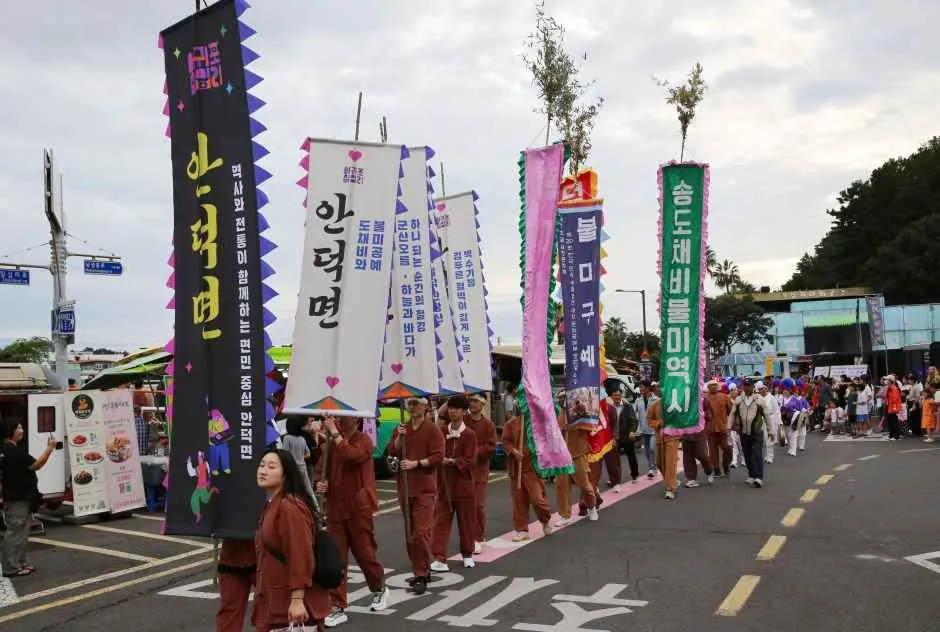
▲ 지역명이 적힌 깃발을 앞세운 행렬(과거 칠십리축제 퍼레이드 사진, 촬영 연도 확인 못 함) 사진=한국관광공사
참고할 만한 사례는 2025년 보도다. 서귀포시는 당시 "10월 18일 거리 퍼레이드 시 중정로부터 정방로, 칠십리로, 천지연폭포까지 차량통행이 제한될 수 있다"고 안내했고, 행사를 주차장에서 여는 만큼 인근 주차가 어려울 수 있어 가급적 대중교통을 이용해 달라고 당부했다. 올해 공식 행진 코스가 2025년에 통제 가능성이 안내된 구간과 같은 도로이므로 퍼레이드 시간대에는 이 구간 차량 통행이 제한될 가능성이 높다고 보는 편이 안전하다(추정). 실제 통제 구간·시간은 확인 못 했다.
| 항목 | 2025년 제31회 안내 | 2026년 제32회 |
|---|---|---|
| 퍼레이드 날짜·시간 | 10월 18일(토) | 10월 23일(금) 16:00~19:00 (공식 공지) |
| 통제 가능 구간·행진 코스 | 통제 가능 구간: 중정로 → 정방로 → 칠십리로 → 천지연폭포(시 안내) | 행진 코스: 중정로-정방로-칠십리로-천지연폭포 주차장(약 2.8km), 차량 통제 구간·시간은 미발표 |
| 행사 범위 | 천지연폭포 주차장 + 서귀진지·자구리공원·새연교·이중섭거리 | '천지연폭포 주차장 일대'로만 표기, 확대 여부 미발표 |
| 주차 안내 | 인근 주차 어려움, 대중교통 권장 | 공식 안내 없음(공식 사이트 '오시는 길'은 추후 업데이트 예정) |
| 셔틀버스·임시주차장 | 검색한 보도에서 확인 못 함 | 미발표(공식 사이트·검색 보도 모두 언급 없음) |
✅ 퍼레이드 날 운전 요령 (추정 포함)
· 23일은 금요일이고 퍼레이드 행사일시(16:00~19:00)가 퇴근 시간대와 겹쳐 원도심 정체가 심할 수 있다(추정)
· 중정로·정방로·칠십리로 구간은 일시 통제 가능성에 대비해 우회로를 지도앱으로 미리 확인
· 시청·축제 공식 채널에 통제 공지가 올라오면 그 기준을 따를 것
4. "천지연폭포 주차장이 행사장" — 대신 어디에 세우나
천지연폭포 주차장은 서귀포시 E-Ticket 공식 안내 기준 주차대수 230대(승용차·버스 합산)다(이전 판에 적었던 '소형 약 100대·대형 약 30대'는 제3자 정보라 공식 수치로 바로잡았다). 주차요금은 공식 페이지에 표기가 없고 제3자 정보 사이트는 무료로 소개한다. 이 주차장이 축제장으로 쓰이므로 축제 기간 폭포 방문 차량이 평소처럼 들어갈 수 있다고 기대하기 어렵다(2025년 시 안내 기준 추정). 천지연폭포 자체는 운영시간이 09:00~22:00(입장 마감 21:20), 주소는 남성중로 2-15, 문의는 064-733-1528이며, 입장료는 성인 개인 2,000원(6세 이하·65세 이상·제주도민 등은 무료)으로 안내된다. 서귀포시 E-Ticket 천지연폭포 바로가기 축제 기간 폭포 운영 변동 여부는 확인 못 했다.
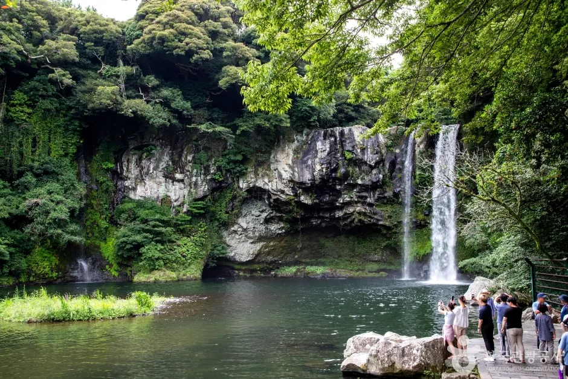
▲ 녹음이 우거진 천지연폭포(축제 시기와 다른 계절로 보이는 사진) 사진=한국관광공사
| 후보 | 정보 | 비고 |
|---|---|---|
| 천지연폭포 주차장 | 230대(승용차·버스), 서귀포시 E-Ticket | 행사장 — 이용 제한 가능성 높음(추정). 요금은 공식 표기 없음, 포털 미등재 |
| 아랑조을거리 공영주차빌딩(서귀동 312-6) | 139면 · 평일 09~18시 유료, 주말·공휴일 유료시간 미설정 · 약 0.3km | 행사장과 가장 가까운 포털 등재 빌딩. 퍼레이드 코스(중정로·정방로) 통제 시 진출입 경로 확인 |
| 정방 공영주차빌딩(서귀동 403-6)·정방 노외1(403-2) | 136면·37면 · 평일 09~18시 유료, 주말·공휴일 유료시간 미설정 · 약 0.6km | 퍼레이드 코스인 정방로 인근이라 23일 16~19시 통행 제한 영향 가능(추정) |
| 천지 공영주차빌딩(서귀동 305-1) | 218면 · 평일 09~18시 유료, 주말·공휴일 유료시간 미설정 · 약 0.8km | 23일(금)은 유료 시간대에 해당하나 퍼레이드 시간(16~19시) 중 18시 이후는 유료시간 밖(포털 요금 설정 기준) |
| 중앙 공영주차빌딩(서귀동 291-2) | 304면 · 매일 09~20시 유료(주말·공휴일 포함) · 약 0.6km | 면수가 가장 많은 편이나 주말에도 유료 |
| 매일올레시장 공영주차빌딩(서귀동 277-1) | 232면 · 요금 시간대 00:00~23:59(주말·공휴일 포함) · 약 0.7km | 시장·이중섭거리 연계. 야간에도 요금 부과 |
| 자구리 공영주차장(서귀동 28-3) | 70면 · 평일 09~18시 유료 · 천지연 약 0.7km, 새연교 약 0.9km | 새연교 쪽 야간 일정과 묶기 좋은 위치(직선거리 기준) |
| 서귀포시 주차포털 | 등재 공영주차장 32곳의 위치·면수·요금 조회 | 천지연폭포·새연교 주차장은 등재 목록에 없음. parking.seogwipo.go.kr |
포털에 등록된 요금 항목은 대부분 무료 30분, 기본 15분 1,000원, 추가 15분 500원, 1일 최대 10,000원이다(2026-10-01 조회, 세부 해석은 포털 상세 확인). 시 포털은 위치·면수·요금과 현재 주차 현황까지 보여주지만, 축제 기간 특별 운영(연장·임시 무료 등)은 공지된 바 없다. 이전에 소개했던 올레시장 일대 '무료 주차장 2곳(서귀동 216-13·260-52)'은 포털 등재 목록에서 확인되지 않아 표에서 뺐다.
서귀포시는 공영주차장 정보 포털에서 위치·요금·현황을 안내한다. 서귀포시 주차포털 바로가기
📍 주차 전략 한 줄 요약
행사장 코앞에서 자리를 찾지 말고, 아랑조을거리·천지·정방 공영주차빌딩 등 원도심 빌딩에 세운 뒤 걸어 이동하는 쪽이 시간 손실이 적다. 표의 거리는 직선거리 추정이라 실제 보행 시간은 지도앱으로 확인하자. 23일은 만차 가능성도 있으니 포털의 현재 주차 현황을 출발 전에 열어 볼 것.
5. 렌터카·뚜벅이 동선 — 제주 도심 축제의 변수
렌터카로 오는 경우, 축제 기간 서귀포 원도심 숙소의 주차 가능 여부가 먼저 변수다. 숙소 주차를 먼저 확인하고, 숙소에 차를 두고 도보·택시로 행사장을 오가는 방식이 가장 단순하다(필자 판단). 서귀포 시내버스·택시 임시 증편이나 셔틀버스 운행 여부는 미발표다(공식 사이트는 '오시는 길'을 추후 업데이트한다고만 공지). 하나 더 챙길 변수는 시기다. 제107회 전국체육대회가 10월 16~22일 제주 도내 75개 경기장에서 열려 폐회 바로 다음 날 축제가 시작된다. 렌터카·숙소 수급에 영향을 줄지는 확인 못 했지만 예약은 일찍 해 두는 편이 안전하다(추정).
| 방식 | 장점 | 주의 |
|---|---|---|
| 자가용·렌터카 + 원도심 주차 | 도보로 축제장 접근 가능 | 23일(금)은 09~18시 유료 빌딩이 많고, 24~25일은 아랑조을거리·천지·정방 빌딩이 유료시간 미설정(중앙·올레시장 빌딩은 주말도 유료) |
| 숙소 주차 후 도보·택시 | 통제 구간 걱정 감소 | 택시 대기·요금은 확인 못 함 |
| 대중교통 | 시가 2025년에 권장 | 2026년 버스 증차·노선 안내 확인 못 함 |
| 셔틀버스 | — | 미발표(공식 사이트·검색 보도에 언급 없음) |
| 날짜 | 확정된 일정 | 운전·주차 포인트(추정 포함) |
|---|---|---|
| 10월 23일(금) | 거리 퍼레이드 16:00~19:00(중정로-정방로-칠십리로-천지연폭포 주차장) | 퇴근 정체와 겹침. 코스 인접 도로 회피, 평일 유료 빌딩은 18시 이후 요금 시간대 밖(포털 설정 기준). 일몰(17:50 안팎) 전후라 귀가는 어두움 |
| 10월 24일(토) | 우리동네 예술인 공연(메인무대), 그 외 전체 시간표 미발표 | 주말이라 관광객·도민 방문 증가 예상. 천지·아랑조을거리·정방 빌딩은 유료시간 미설정 표기라 선점 경쟁 가능 |
| 10월 25일(일) | 해순이·섬돌이 어린이 선발대회 본선 16:00~17:00(천지연폭포 특설무대), 우리동네 예술인 | 보호자 동반 필수 행사라 가족 단위 차량 집중 예상. 일요일 저녁 폐막 후 출차 대기와 공항·렌터카 반납 일정 겹침 주의 |
✅ 렌터카 반납·운행 체크
· 퍼레이드 시간대에는 중정로·정방로 구간 진입을 피할 경로를 미리 설정
· 저녁 행사 후 귀가 때는 주차장 출차 대기가 길어질 수 있어 출차 시간 여유를 둘 것(추정)
· 야간 운전 시 서귀포 원도심 보행자 증가에 주의(추정)
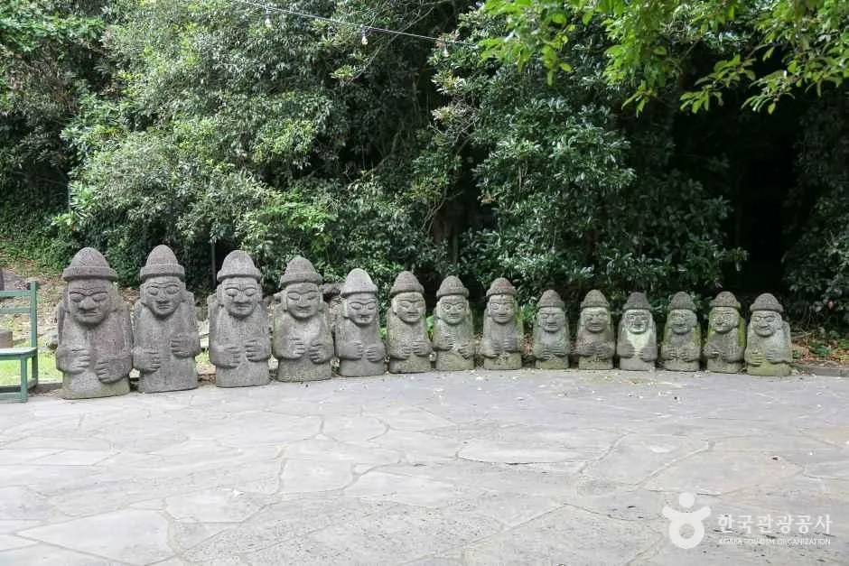
▲ 돌하르방이 줄지어 선 모습(한국관광공사 천지연폭포 등록 사진, 정확한 촬영 위치와 시기는 확인 못 함) 사진=한국관광공사
6. 축제 전후로 묶기 좋은 곳 — 천지연폭포·새연교·올레시장·이중섭거리
한국관광공사 TourAPI 기준 주소로 보면 천지연폭포(남성중로)와 새연교(남성중로 40 일대)는 같은 도로변 권역이고, 서귀포매일올레시장과 이중섭거리(이중섭로 29)는 원도심에 있다. 구체적인 거리·소요 시간은 공식 자료가 없어 지도앱으로 확인이 필요하다.
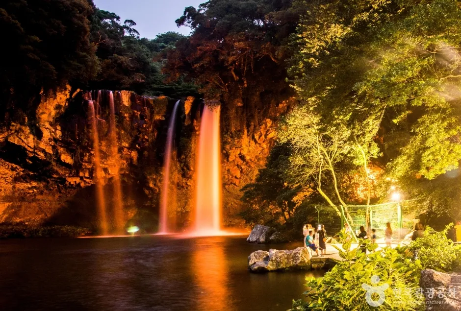
▲ 밤에 조명이 켜진 천지연폭포(한국관광공사 제공, 촬영 시기 확인 못 함) 사진=한국관광공사
| 장소 | 특징 | 메모 |
|---|---|---|
| 천지연폭포 | 폭포 높이 22m(폭 12m), 연못 깊이 20m, 입장 마감 21:20, 성인 개인 2,000원 | 축제 기간 입구 혼잡 가능(추정), 운영 변동 확인 못 함 |
| 새연교 | 상시 개방 보행교(연중무휴), 점등시간은 전화 문의(안내소 064-760-3471). 주차 가능(한국관광공사), 장애인 주차 2대 | 10월 2~3·9~10·16~17일 금·토 19~22시 새연교 주차장 일원에서 '비어가든 in 금토금토 새연쇼'가 열려 축제(23~25일)와는 겹치지 않음. 23~25일 운영 여부는 확인 못 함 |
| 서귀포매일올레시장 | 먹거리 시장 | 매일올레시장 공영주차빌딩(232면, 24시간 요금 부과) 연계 |
| 이중섭거리 | 이중섭미술관과 거리 일대 산책 | 주차는 올레시장 일대와 함께 확인 |
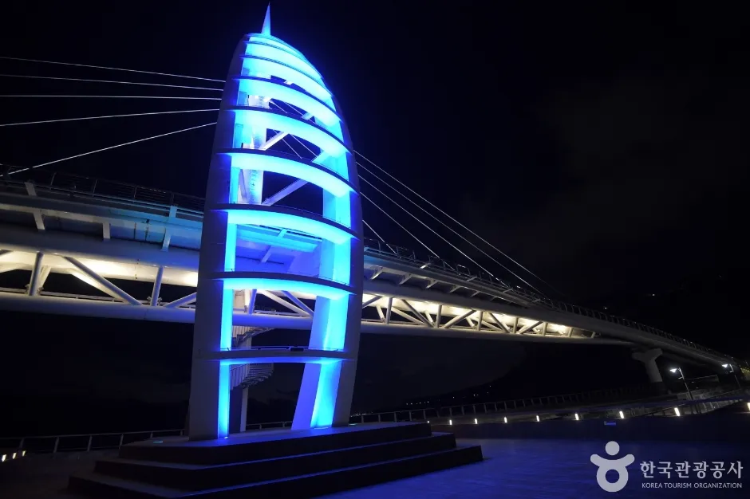
▲ 푸른 조명이 켜진 새연교 주탑(밤 사진, 촬영 시기 확인 못 함) 사진=한국관광공사
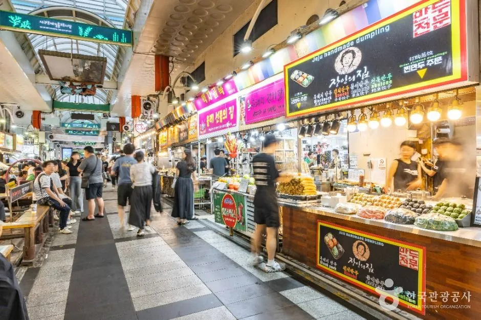
▲ 먹거리 가게가 이어진 서귀포매일올레시장 통로 사진=한국관광공사
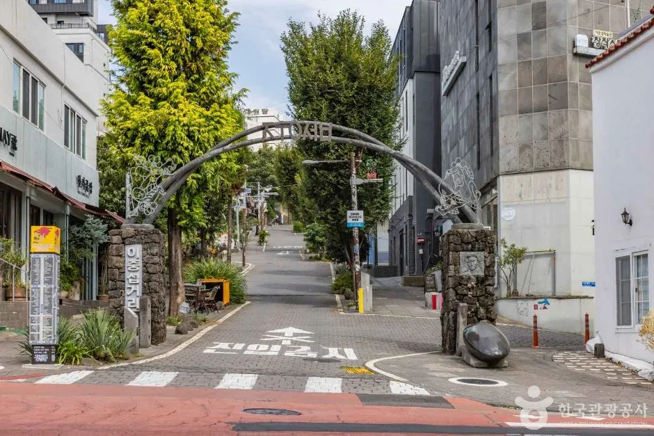
▲ 이중섭거리 입구 쪽 길 사진=한국관광공사
해가 진 뒤 축제장에서 새연교로 이어가는 야간 일정은 편하지만 새연교 주차장의 면수·요금은 공식 자료에서 확인 못 했다(한국관광공사는 '주차 가능'으로만 안내, 비공식 정보는 무료로 소개). 10월 중순까지는 이 주차장 일원이 금·토 저녁 행사장으로 쓰이므로, 포털에 등재된 자구리 공영주차장(70면)도 대안으로 보자.
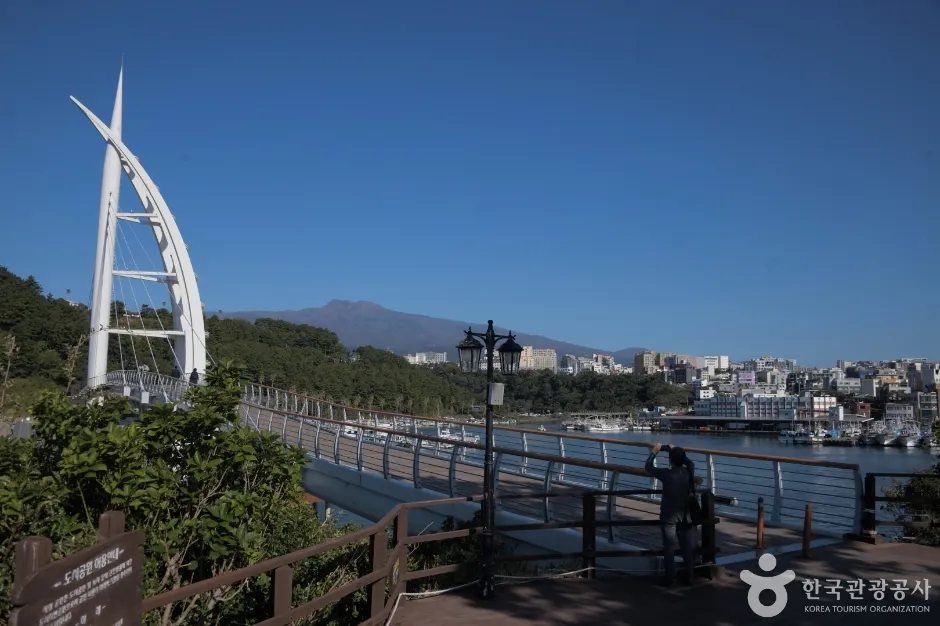
▲ 맑은 하늘 아래 새연교와 먼 산 능선(촬영 시기 확인 못 함) 사진=한국관광공사
축제와 주변 관광지 정보는 한국관광공사에서도 확인할 수 있다. 한국관광공사 축제 정보 바로가기
7. 10월 말 제주 날씨와 일몰 — 야간 행사 준비물
제주시 기준 10월 평균기온은 약 18.6℃(평균 최고 21.6℃, 최저 15.7℃)로 소개된다. 서귀포는 이보다 약간 따뜻할 수 있지만 확인 못 함이다. 낮엔 얇은 겉옷, 해가 진 뒤엔 바닷바람이 부는 야외 행사장이라 긴 소매 겉옷이 필요하다(추정). 10월 하순 서귀포의 일몰은 위도·경도로 계산하면 23일 오후 5시 52분, 25일 5시 50분 안팎(필자 계산 추정)이다. 정확한 시각은 한국천문연구원·기상청 자료로 확인하자. 23일 퍼레이드(16:00~19:00)는 해가 지는 시각에 끝나고, 2025년 행사 운영시간이 10:00~23:00였던 만큼 귀갓길은 어두운 상태라고 생각하는 편이 안전하다.
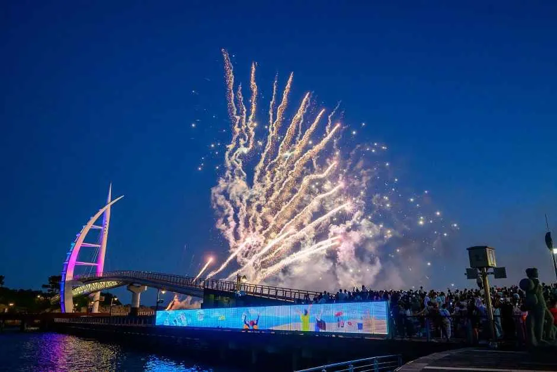
▲ 새연교 일대 불꽃 장면(과거 공연 사진, 이번 축제와는 무관) 사진=한국관광공사
✅ 출발 전 체크리스트
· 70festival.com·서귀포시 공지에서 교통통제 구간·주차 안내·'프로그램 안내' 오픈 여부 확인
· 숙소 주차 가능 여부, 목표 공영주차빌딩의 요금 시간대(평일 09~18시 등)와 현재 주차 현황 확인
· 퍼레이드 시간대 중정로·정방로·칠십리로 우회 경로 설정
· 겉옷·우산, 귀가 시간 여유
· 2025년 사례는 참고일 뿐 2026년은 별도 확인
8. 자주 묻는 질문 — 차 가져가기 전에
❓ 퍼레이드 날 차량 통제는 어디까지 되나요?
공식 행진 코스는 중정로-정방로-칠십리로-천지연폭포 주차장(약 2.8km)이다. 2025년에는 같은 구간의 차량 통행 제한 가능성이 시 보도로 안내됐지만, 2026년 통제 구간·시간은 아직 나오지 않았다. 공식 공지사항 바로가기
❓ 천지연폭포 주차장에 세울 수 있나요?
주차장은 서귀포시 공식 안내로 230대 규모지만 축제 본무대·부스가 들어서는 자리다. 2025년에도 시가 인근 주차가 어려울 수 있다며 대중교통을 권했으므로 현장 주차는 기대하지 않는 것이 안전하다(추정).
❓ 주말(24~25일)에는 주차가 무료인가요?
포털 데이터상 아랑조을거리·천지·정방 공영주차빌딩은 주말·공휴일에 요금 시간대가 설정돼 있지 않다(00:00~00:00 표기). 반면 중앙 공영주차빌딩(매일 09~20시)과 매일올레시장 공영주차빌딩(24시간)은 주말에도 요금이 부과된다. 축제 기간 운영 변경은 공지된 바 없지만 현장 요금 안내판을 따를 것.
❓ 퍼레이드에 직접 참여하려면?
일반참가자는 개인·가족·동아리·단체·기업 누구나 신청할 수 있고(전문 공연팀이 아니어도 가능), 접수는 10월 2일(금) 18시까지, 선정 발표는 10월 7일(수)이다. 선정 단체는 야외공연·축제행사 안전교육 이수증을 제출해야 한다. 문의는 서귀포시 관광진흥과 064-760-3942.
❓ 시간표와 출연진은 언제 나오나요?
공식 사이트 '행사 안내'·'프로그램 안내' 메뉴가 '오픈 예정'으로 잠겨 있어 기준일 현재 알 수 없다. 공개 시점도 공지되지 않았다.
9. 요약
제32회 서귀포칠십리축제는 2026년 10월 23일(금)~25일(일), 천지연폭포 주차장 일원에서 열리는 무료 행사다(공식 포스터 기준, 문의 064-760-3942). 첫날 거리 퍼레이드는 16:00~19:00, 중정로-정방로-칠십리로-천지연폭포 주차장(약 2.8km)으로 공식 공지됐고, 25일 16:00 어린이 선발대회 본선과 24~25일 우리동네 예술인도 확인됐다. 전체 시간표·출연진·교통통제·셔틀은 아직 미발표이며, 2025년에는 같은 구간의 통행 제한 가능성과 인근 주차 어려움이 안내됐다.
행사장이 주차장(공식 230대)이라 현장 주차보다 아랑조을거리·천지·정방 등 원도심 공영주차빌딩 주차 후 도보가 현실적이다. 평일 09~18시 유료·주말 유료시간 미설정 빌딩이 많지만 일부는 주말에도 유료이니 포털에서 확인하고, 셔틀은 미발표다.